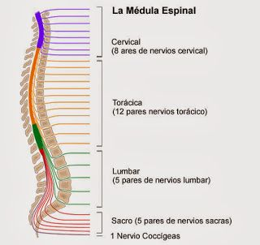

El sistema nervioso central (SNC) está formado por el cerebro y la médula espinal. La médula espinal se conecta a una sección del cerebro llamada “tronco cerebral”. El SNC controla la mayor parte de las funciones del cuerpo transmitiendo los mensajes entre el cerebro y el resto del cuerpo de forma bidireccional.
Hay enfermedades o lesiones que pueden dañar la médula espinal, lo que alteraría el intercambio de información entre el cerebro y el resto del cuerpo.
Medula espinal:
La médula espinal puede ser comparada a un cable telefónico que conecta la oficina principal (el cerebro), con otras oficinas particulares (las partes del cuerpo) por medio de líneas telefónicas (las fibras nerviosas). Este cable es el camino que los mensajes usan para viajar desde el cerebro y las diferentes partes del cuerpo.
Los mensajes sensoriales, como temperatura, dolor, tacto llegan al cerebro desde la piel y las vísceras, donde son procesados y confrontados instantáneamente. Desde el cerebro se envían las órdenes oportunas a través de la médula hasta los músculos, que realizan los movimientos, o hasta los órganos internos, que responden adecuadamente.
En la médula también se producen respuestas motoras automáticas ante un estímulo, lo que se conoce como actividad autónoma refleja.
